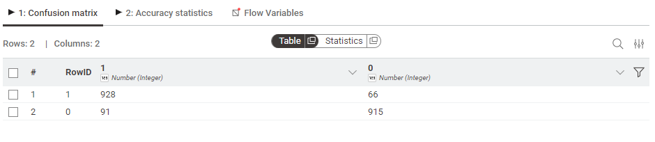
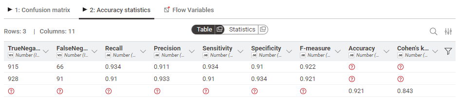
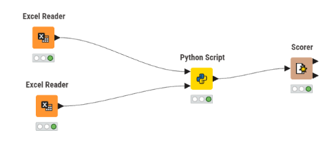
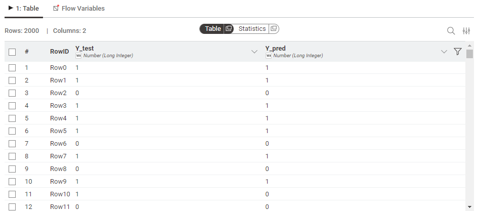
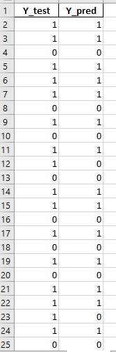

Klasifikasi Naive Bayes#
Notebook ini berisi penjelasan detail mengenai algoritma Naive Bayes dan pengimplementasiannya menggunakan Python (Scikit-Learn) serta panduan langkah-demi-langkah di KNIME Analytics Platform.
1. Apa itu Naive Bayes?#
Naive Bayes adalah keluarga algoritma klasifikasi probabilistik yang didasarkan pada penerapan Teorema Bayes dengan asumsi “naif” bahwa setiap fitur dalam dataset saling bebas (independen) satu sama lain.
Teorema Bayes#
Teorema ini digunakan untuk menghitung probabilitas suatu label (\(c\)) berdasarkan fitur (\(x\)) yang diberikan:
Di mana:
\(\text{P}(c|x)\): Probabilitas Posterior (probabilitas kelas \(c\) jika fitur \(x\) diketahui).
\(\text{P}(x|c)\): Likelihood (probabilitas fitur \(x\) muncul pada kelas \(c\)).
\(\text{P}(c)\): Prior (probabilitas awal kelas \(c\)).
\(\text{P}(x)\): Evidence (probabilitas munculnya fitur \(x\)).
Mengapa Disebut “Naive”?#
Karena algoritma ini mengasumsikan bahwa kehadiran satu fitur tertentu dalam suatu kelas tidak berhubungan dengan kehadiran fitur lainnya. Meskipun dalam dunia nyata asumsi ini sering kali tidak benar, Naive Bayes bekerja dengan sangat baik untuk dataset besar, klasifikasi teks (spam filtering), dan diagnosis medis.
2. Pengimplementasian Menggunakan Python#
Langkah-langkah umum dalam Python:
Import Library: Menyiapkan tools seperti Pandas, Scikit-Learn.
Load Dataset: Membaca data dari file Excel/CSV.
Preprocessing: Mengubah label teks menjadi angka (Label Encoding) dan normalisasi data (Scaling).
Split Data: Membagi data menjadi Training Set dan Testing Set.
Model Training: Melatih model Gaussian Naive Bayes.
Evaluation: Menghitung akurasi, Confusion Matrix, dan Classification Report.
import numpy as np
import pandas as pd
from sklearn.preprocessing import LabelEncoder
from sklearn.model_selection import train_test_split
from sklearn.preprocessing import StandardScaler
from sklearn.naive_bayes import GaussianNB
from sklearn.metrics import confusion_matrix, classification_report, accuracy_score
dataset = pd.read_excel('data/fruit.xlsx')
print(dataset.head())
print(dataset.info())
diameter weight red green blue name
0 2.96 86.76 172 85 2 orange
1 3.91 88.05 166 78 3 orange
2 4.42 95.17 156 81 2 orange
3 4.47 95.60 163 81 4 orange
4 4.48 95.76 161 72 9 orange
<class 'pandas.core.frame.DataFrame'>
RangeIndex: 10000 entries, 0 to 9999
Data columns (total 6 columns):
# Column Non-Null Count Dtype
--- ------ -------------- -----
0 diameter 10000 non-null float64
1 weight 10000 non-null float64
2 red 10000 non-null int64
3 green 10000 non-null int64
4 blue 10000 non-null int64
5 name 10000 non-null object
dtypes: float64(2), int64(3), object(1)
memory usage: 468.9+ KB
None
en = LabelEncoder()
dataset['name'] = en.fit_transform(dataset['name'])
print(dataset.head())
diameter weight red green blue name
0 2.96 86.76 172 85 2 1
1 3.91 88.05 166 78 3 1
2 4.42 95.17 156 81 2 1
3 4.47 95.60 163 81 4 1
4 4.48 95.76 161 72 9 1
x = dataset.iloc[:, :-1].values
y = dataset.iloc[:, -1].values
x_train, x_test, y_train, y_test = train_test_split(x, y, test_size=0.2, random_state=123)
print(f"Data Training: {len(x_train)}, Data Testing: {len(x_test)}")
Data Training: 8000, Data Testing: 2000
sc = StandardScaler()
x_train = sc.fit_transform(x_train)
x_test = sc.transform(x_test)
classifier = GaussianNB()
classifier.fit(x_train, y_train)
GaussianNB()In a Jupyter environment, please rerun this cell to show the HTML representation or trust the notebook.
On GitHub, the HTML representation is unable to render, please try loading this page with nbviewer.org.
GaussianNB()
y_pred = classifier.predict(x_test)
print("Akurasi: ", accuracy_score(y_test, y_pred) * 100)
Akurasi: 92.15
print("Confusion Matrix:\n", confusion_matrix(y_test, y_pred))
print("\nClassification Report:\n", classification_report(y_test, y_pred))
Confusion Matrix:
[[915 91]
[ 66 928]]
Classification Report:
precision recall f1-score support
0 0.93 0.91 0.92 1006
1 0.91 0.93 0.92 994
accuracy 0.92 2000
macro avg 0.92 0.92 0.92 2000
weighted avg 0.92 0.92 0.92 2000
3. Pengimplementasian Menggunakan KNIME#
KNIME Analytics Platform memungkinkan kita untuk menggabungkan pemrosesan visual dengan script Python. Berikut adalah langkah-langkah detailnya:
Langkah 1: Install Extension#
Sebelum memulai, pastikan extension Python sudah terinstall:
Buka KNIME.
Pilih menu File -> Install KNIME Extensions…
Cari kata kunci “KNIME Python Integration”.
Pilih extension tersebut, klik Next, setujui lisensi, dan biarkan proses instalasi selesai. Restart KNIME jika diminta.
Langkah 2: Menyusun Workflow#
Susun node di Workflow Editor dengan urutan sebagai berikut:
Excel Reader (2 Nodes):
node pertama untuk membaca dataset utama.
node untuk data testing.
Python Script: Node ini akan berisi logika inti Naive Bayes menggunakan library Scikit-Learn.
Scorer: Hubungkan output dari node Python Script ke node Scorer untuk membandingkan
Y_test(aktual) danY_pred(prediksi) secara visual.



Langkah 3: Konfigurasi Node Python Script#
Klik pada node Python Script dan masukkan kode berikut:
import numpy as np
import pandas as pd
from sklearn.preprocessing import LabelEncoder, StandardScaler
from sklearn.model_selection import train_test_split
from sklearn.naive_bayes import GaussianNB
from sklearn.metrics import confusion_matrix, classification_report, accuracy_score
import knime.scripting.io as knio
# Membaca Dataset dari KNIME
dataset = knio.input_tables[0].to_pandas()
# Label Encoding
en = LabelEncoder()
dataset['name'] = en.fit_transform(dataset['name'])
# Menentukan X dan Y
x = dataset.iloc[:, :-1].values
y = dataset.iloc[:, -1].values
# Split Data
x_train, x_test, y_train, y_test = train_test_split(x, y, test_size=0.2, random_state=123)
# Scaling Data
sc = StandardScaler()
x_train = sc.fit_transform(x_train)
x_test = sc.transform(x_test)
# Klasifikasi
classifier = GaussianNB()
classifier.fit(x_train, y_train)
# Prediksi & Evaluasi
y_pred = classifier.predict(x_test)
print("Confusion Matrix:\n", confusion_matrix(y_test, y_pred))
print("\nClassification Report:\n", classification_report(y_test, y_pred))
print("Akurasi: ", accuracy_score(y_test, y_pred) * 100)
# Menyimpan Hasil
y_data = pd.DataFrame({'Y_test': y_test, 'Y_pred': y_pred})
knio.output_tables[0] = knio.Table.from_pandas(y_data)

Langkah 4: Evaluasi di Scorer#
Setelah node Python Script dijalankan (berwarna hijau), jalankan node Scorer. Anda dapat mengonfigurasi kolom Y_test sebagai First Column dan Y_pred sebagai Second Column untuk melihat ringkasan akurasi dan statistik lainnya.
Hasil Excel Menggunakan Python:#
